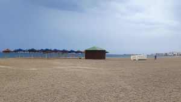

Etiqueta picture con media query

Etiqueta picture con varias media query
Etiqueta picture con media query para el tipo
Etiqueta picture con una media query con sizes y varios valores srcset
Etiqueta picture con media query y sizes en la etiqueta img
Etiqueta picture con media query relacionado con densidad de pixeles